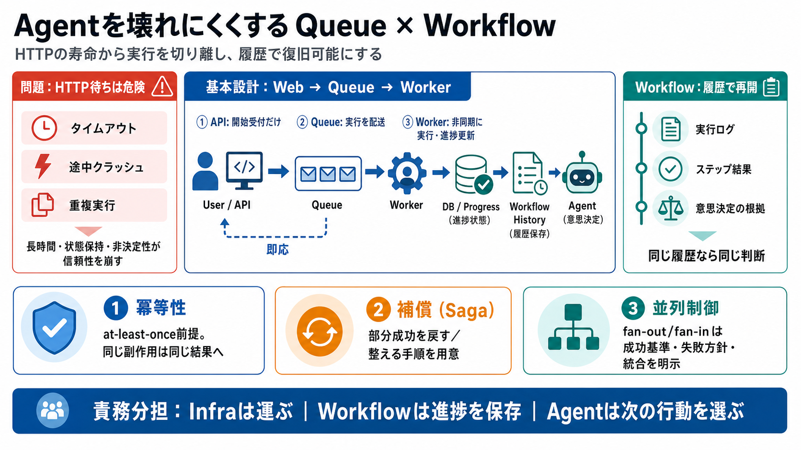

AI Agent Orchestration Patterns (2026 Guide) - The Thinking Company
Agent orchestration patterns are the architectural blueprints that define how multiple AI agents coordinate, communicate…

エージェントはHTTPの寿命に閉じ込めると壊れやすい。QueueとWorkflowで「実行の寿命」と「意思決定の履歴」を分けて、復旧可能にする。
APIは実行開始だけを行い、ジョブをQueueに投入する。ワーカーが非同期に実行し、進捗はDBへ記録することでHTTPと寿命を切り離す。
Queueは“ある程度”の実行を保証するだけで、論理的に何を途中までやったかまでは面倒を見ない。at-least-onceでは重複実行が起きる前提で冪等性が必須になる。
途中停止や部分成功に備えて、補償（compensation）を設計する。サーガ（Saga）では「戻す/整える」手順を副作用ごとに用意する。
分岐と復旧が増える局面ではWorkflowが必要になる。実行履歴を保持し、クラッシュ後に“同じ履歴に基づいて”再実行できるようにする。
Workflowでは「意思決定（コーディネータ）」と「副作用（ステップ）」を分ける。コーディネータは同じ履歴なら同じ判断をするべきだと強調される。
並列化（fan-out / fan-in）では成功基準・失敗方針・統合の設計が重要になる。単に多重投入すると、待ち続けたり、結果の統合が壊れる。
Render Workflowsは、実行配線（キュー/ワーカー/ステータス/リトライ等）を抽象化する。タスク関数として書いたものをプラットフォームがチェーン実行する。
Renderが簡素化しても、冪等性・補償・アーティファクト保管・承認境界・コスト上限・レート制御など“何を進捗とみなすか”はアプリ側の責務として残る。
成熟したアプローチは「インフラは運ぶ」「ワークフローは進捗を保存」「エージェントは次の行動を選ぶ」。責務の違いを保ったまま、運用負担を減らす。
パターンは“そのまま適用”ではなく、要件（部分失敗の許容、課金/通知の一貫性、承認、コスト上限）に合わせて責務分担を決める必要がある。
Agent orchestration patterns are the architectural blueprints that define how multiple AI agents coordinate, communicate…
Key Takeaway Production agentic AI workflows require five architecture patterns: right execution model (sequential vs p…
Agentic workflow patterns – Workflow patterns describe how multiple agents, tools, and environments interact to form aut…
In 2026, the shift is clear: enterprises are moving beyond simple chat interfaces toward agentic workflow design that re…
## Most AI implementations don't fail because the model was wrong. They fail because the architecture was. Choosing betw…